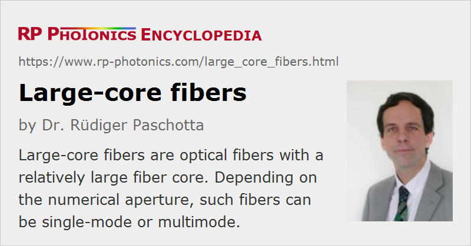

Large-core Fibers
Acronym: LCF
Definition: optical fibers with relatively large fiber core
More general term: optical fibers
German: Fasern mit großem Kern
Category: fiber optics and waveguides
How to cite the article; suggest additional literature
Author: Dr. Rüdiger Paschotta
A large-core fiber is an optical fiber having a fiber core which is relatively large. It can be a multimode fiber or a single-mode fiber.
Large-core Multimode Fibers
Large-core multimode fibers have a core diameter which is well above the typically used 50 μm or 62.5 μm of telecom fibers – for example, 100 μm or even 400 μm. The core is often not much smaller than the fiber cladding (see Figure 1). The cladding diameter may substantially go beyond the usual 125 μm in order to realize even larger cores. The number of guided fiber modes is then usually very high.
Frequently, such fibers have a pure silica fiber core (rather than e.g. a germanosilicate core) and a fiber cladding with somewhat reduced refractive index, e.g. achieved with fluorine doping. For realizing a high numerical aperture, however, one may still use fibers with germanosilicate core.
Typical applications of large-core multimode fibers are the passive transport of light e.g. in the context of illumination, laser material processing or optical pumping of solid-state lasers.
Large-core Single-mode Fibers
If a large-core fiber is a single-mode fiber, it also has a large effective mode area. Here, the term large mode area fiber is more common and more appropriate, since the large mode area is a particularly important property: it results in reduced nonlinear effects combined with a high beam quality.

Suppliers
The RP Photonics Buyer's Guide contains 15 suppliers for large-core fibers. Among them:
Questions and Comments from Users
Here you can submit questions and comments. As far as they get accepted by the author, they will appear above this paragraph together with the author’s answer. The author will decide on acceptance based on certain criteria. Essentially, the issue must be of sufficiently broad interest.
Please do not enter personal data here; we would otherwise delete it soon. (See also our privacy declaration.) If you wish to receive personal feedback or consultancy from the author, please contact him e.g. via e-mail.
By submitting the information, you give your consent to the potential publication of your inputs on our website according to our rules. (If you later retract your consent, we will delete those inputs.) As your inputs are first reviewed by the author, they may be published with some delay.
See also: fibers, large mode area fibers, effective mode area
and other articles in the category fiber optics and waveguides
|  |
If you like this page, please share the link with your friends and colleagues, e.g. via social media:
These sharing buttons are implemented in a privacy-friendly way!